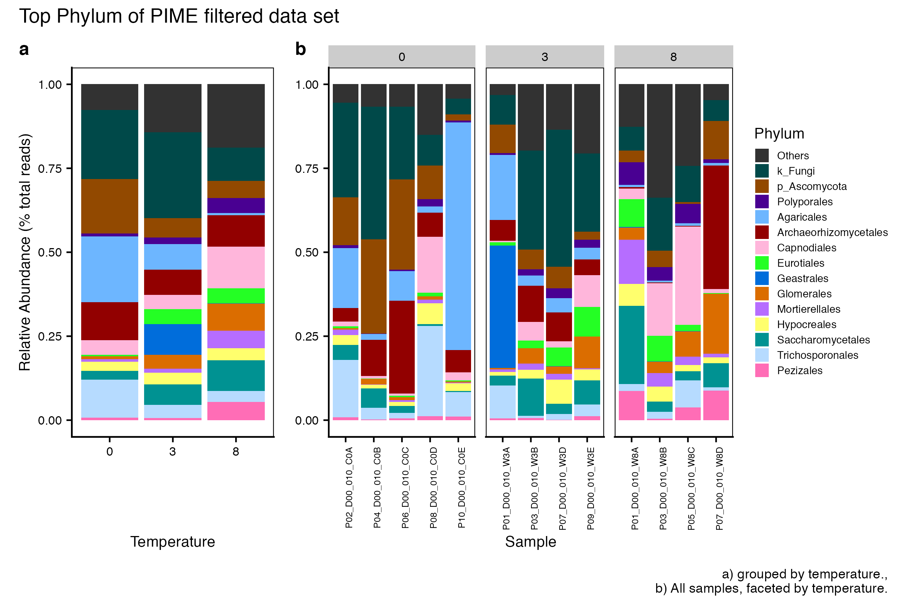

Click here for setup information.
knitr::opts_chunk$set(echo = TRUE, eval = FALSE)
set.seed(119)
#library(conflicted)
#pacman::p_depends(phangorn, local = TRUE)
#pacman::p_depends_reverse(phangorn, local = TRUE)
library(phyloseq); packageVersion("phyloseq")
library(Biostrings); packageVersion("Biostrings")
pacman::p_load(tidyverse, metacoder, hilldiv, patchwork, codefolder,
agricolae, labdsv, naniar, codefolder, pairwiseAdonis,
microbiome, seqRFLP, DT, microeco, file2meco, cowplot,
GUniFrac, ggalluvial, ggdendro, tidytree, igraph, reactable,
pheatmap, SpiecEasi, Tax4Fun, WGCNA, microbiomeMarker,
captioner, downloadthis,
install = FALSE, update = FALSE)
options(scipen=999)
knitr::opts_current$get(c(
"cache",
"cache.path",
"cache.rebuild",
"dependson",
"autodep"
))Synopsis
This workflow contains taxonomic diversity assessments for the 16S rRNA and ITS data sets. In order to run the workflow, you either need to first run the DADA2 Workflow, then the Data Preparation workflow, and finally the Filtering workflow.
In this workflow, we use the microeco to look at the taxonomic distribution of microbial communities.
Taxonomic Assessment
16s rRNA
Here we compare the taxonomic breakdown of the Full (unfiltered), Arbitrary filtered, PERfect filtered, and PIME filtered data sets, split by temperature treatment.
Before we plot the data, we want to separate out the Proteobacteria classes so we can plot these along with other phyla. To accomplish this we perform the following steps:
- Get all Class-level Proteobacteria names
Show code
ssu18_data_sets <- c("ssu18_ps_work", "ssu18_ps_filt",
"ssu18_ps_perfect", "ssu18_ps_pime")
for (i in ssu18_data_sets) {
tmp_name <- purrr::map_chr(i, ~paste0(., "_proteo"))
tmp_get <- get(i)
tmp_df <- subset_taxa(tmp_get, Phylum == "Proteobacteria")
assign(tmp_name, tmp_df)
print(tmp_name)
tmp_get_taxa <- get_taxa_unique(tmp_df,
taxonomic.rank = rank_names(tmp_df)[3],
errorIfNULL=TRUE)
print(tmp_get_taxa)
rm(list = ls(pattern = "tmp_"))
rm(list = ls(pattern = "_proteo"))
}- Replace Phylum Proteobacteria with the Class name.
Show code
for (j in ssu18_data_sets) {
tmp_name <- purrr::map_chr(j, ~paste0(., "_proteo_clean"))
tmp_get <- get(j)
tmp_clean <- data.frame(tax_table(tmp_get))
for (i in 1:nrow(tmp_clean)){
if (tmp_clean[i,2] == "Proteobacteria" & tmp_clean[i,3] == "Alphaproteobacteria"){
phylum <- base::paste("Alphaproteobacteria")
tmp_clean[i, 2] <- phylum
} else if (tmp_clean[i,2] == "Proteobacteria" & tmp_clean[i,3] == "Gammaproteobacteria"){
phylum <- base::paste("Gammaproteobacteria")
tmp_clean[i, 2] <- phylum
} else if (tmp_clean[i,2] == "Proteobacteria" & tmp_clean[i,3] == "Zetaproteobacteria"){
phylum <- base::paste("Zetaproteobacteria")
tmp_clean[i, 2] <- phylum
} else if (tmp_clean[i,2] == "Proteobacteria" & tmp_clean[i,3] == "p_Proteobacteria"){
phylum <- base::paste("p_Proteobacteria")
tmp_clean[i, 2] <- phylum
}
}
tax_table(tmp_get) <- as.matrix(tmp_clean)
rank_names(tmp_get)
assign(tmp_name, tmp_get)
print(c(tmp_name, tmp_get))
print(length(get_taxa_unique(tmp_get,
taxonomic.rank = rank_names(tmp_get)[2],
errorIfNULL=TRUE)))
tmp_path <- file.path("files/taxa/rdata/")
saveRDS(tmp_get, paste(tmp_path, j, "_clean.rds", sep = ""))
rm(list = ls(pattern = "tmp_"))
}
rm(class, order, phylum)
objects(pattern="_proteo_clean")- In order to use
microeco, we need to add the rank designation as a prefix to each taxa. For example,Actinobacteriotais changed top__Actinobacteriota.
Show code
for (i in ssu18_data_sets) {
tmp_get <- get(purrr::map_chr(i, ~paste0(., "_proteo_clean")))
#tmp_get <- get(i)
#tmp_path <- file.path("files/alpha/rdata/")
#tmp_read <- readRDS(paste(tmp_path, i, ".rds", sep = ""))
tmp_sam_data <- sample_data(tmp_get)
tmp_tax_data <- data.frame(tax_table(tmp_get))
tmp_tax_data$Phylum <- gsub("p_Proteobacteria", "Proteobacteria", tmp_tax_data$Phylum)
#tmp_tax_data[,c(1:6)]
tmp_tax_data$ASV_ID <- NULL # Some have, some do not
tmp_tax_data$ASV_SEQ <- NULL
tmp_tax_data[] <- data.frame(lapply(tmp_tax_data, gsub,
pattern = "^[k | p | c | o | f]_.*",
replacement = "", fixed = FALSE))
tmp_tax_data$Kingdom <- paste("k__", tmp_tax_data$Kingdom, sep = "")
tmp_tax_data$Phylum <- paste("p__", tmp_tax_data$Phylum, sep = "")
tmp_tax_data$Class <- paste("c__", tmp_tax_data$Class, sep = "")
tmp_tax_data$Order <- paste("o__", tmp_tax_data$Order, sep = "")
tmp_tax_data$Family <- paste("f__", tmp_tax_data$Family, sep = "")
tmp_tax_data$Genus <- paste("g__", tmp_tax_data$Genus, sep = "")
tmp_tax_data <- as.matrix(tmp_tax_data)
tmp_ps <- phyloseq(otu_table(tmp_get),
phy_tree(tmp_get),
tax_table(tmp_tax_data),
tmp_sam_data)
assign(i, tmp_ps)
rm(list = ls(pattern = "tmp_"))
}
rm(list = ls(pattern = "_proteo_clean"))- Next, we need to covert each
phyloseq objectto amicrotable class. The microtable class is the basic data structure for themicroecopackage and designed to store basic information from all the downstream analyses (e.g, alpha diversity, beta diversity, etc.). We use the file2meco to read the phyloseq object and convert into a microtable object. We can add_meas a suffix to each object to distiguish it from its phyloseq counterpart.
Show code
for (i in ssu18_data_sets) {
tmp_get <- get(i)
tmp_otu_table <- data.frame(t(otu_table(tmp_get)))
tmp_sample_info <- data.frame(sample_data(tmp_get))
tmp_taxonomy_table <- data.frame(tax_table(tmp_get))
tmp_phylo_tree <- phy_tree(tmp_get)
tmp_taxonomy_table %<>% tidy_taxonomy
tmp_dataset <- microtable$new(sample_table = tmp_sample_info,
otu_table = tmp_otu_table,
tax_table = tmp_taxonomy_table,
phylo_tree = tmp_phylo_tree)
tmp_dataset$tidy_dataset()
print(tmp_dataset)
tmp_dataset$tax_table %<>% base::subset(Kingdom == "k__Archaea" | Kingdom == "k__Bacteria")
print(tmp_dataset)
tmp_dataset$filter_pollution(taxa = c("mitochondria", "chloroplast"))
print(tmp_dataset)
tmp_dataset$tidy_dataset()
print(tmp_dataset)
tmp_name <- purrr::map_chr(i, ~paste0(., "_me"))
assign(tmp_name, tmp_dataset)
rm(list = ls(pattern = "tmp_"))
}
objects()Here is an example of what a new microeco object looks like when you call it.
ssu18_ps_work_memicrotable class:
sample_table have 15 rows and 6 columns
otu_table have 20173 rows and 15 columns
tax_table have 20173 rows and 6 columns
phylo_tree have 20173 tips
Taxa abundance: calculated for Kingdom,Phylum,Class,Order,Family,Genus - Now, we calculate the taxa abundance at each taxonomic rank using
cal_abund(). This function return a list calledtaxa_abundcontaining several data frame of the abundance information at each taxonomic rank. The list is stored in the microtable object automatically. Its worth noting that thecal_abund()function can be used to solve some complex cases, such as supporting both the relative and absolute abundance calculation and selecting the partial taxonomic columns. More information can be found in the description of the file2meco package. In the same loop we also create atrans_abundclass, which is used to transform taxonomic abundance data for plotting.
Show code
for (i in ssu18_data_sets) {
tmp_me <- get(purrr::map_chr(i, ~paste0(., "_me")))
tmp_me$cal_abund()
tmp_me_abund <- trans_abund$new(dataset = tmp_me, taxrank = "Phylum", ntaxa = 12)
tmp_me_abund$abund_data$Abundance <- tmp_me_abund$abund_data$Abundance / 100
tmp_me_abund_gr <- trans_abund$new(dataset = tmp_me, taxrank = "Phylum", ntaxa = 12,
groupmean = "TEMP")
tmp_me_abund_gr$abund_data$Abundance <- tmp_me_abund_gr$abund_data$Abundance / 100
tmp_name <- purrr::map_chr(i, ~paste0(., "_me_abund"))
assign(tmp_name, tmp_me_abund)
tmp_name_gr <- purrr::map_chr(i, ~paste0(., "_me_abund_group"))
assign(tmp_name_gr, tmp_me_abund_gr)
rm(list = ls(pattern = "tmp_"))
}
objects()The result is stored in object$taxa_abund ...- I prefer to specify the order of taxa in these kinds of plots. We can look the top
ntaxa(defined above) by accessing theuse_taxanamescharacter vector of each microtable object.
Hum. Similar but not the same. This means we need to define the order for each separately. Once we do that, we will override the use_taxanames character vectors with the reordered vectors.
Show code
ssu18_ps_work_tax_ord <- c("Alphaproteobacteria", "Gammaproteobacteria", "Acidobacteriota",
"Actinobacteriota", "Bacteroidota", "Firmicutes", "Myxococcota",
"Verrucomicrobiota", "Chloroflexi", "Planctomycetota",
"Methylomirabilota", "Crenarchaeota")
ssu18_ps_filt_tax_ord <- c("Alphaproteobacteria", "Gammaproteobacteria", "Acidobacteriota",
"Actinobacteriota", "Bacteroidota", "Firmicutes", "Myxococcota",
"Verrucomicrobiota", "RCP2-54", "Planctomycetota",
"Methylomirabilota", "Crenarchaeota")
ssu18_ps_perfect_tax_ord <- c("Alphaproteobacteria", "Gammaproteobacteria", "Acidobacteriota",
"Actinobacteriota", "Bacteroidota", "Firmicutes", "Myxococcota",
"Verrucomicrobiota", "RCP2-54", "Planctomycetota",
"Methylomirabilota", "Crenarchaeota")
ssu18_ps_pime_tax_ord <- c("Alphaproteobacteria", "Gammaproteobacteria", "Acidobacteriota",
"Actinobacteriota", "Bacteroidota", "Firmicutes", "Myxococcota",
"Verrucomicrobiota", "RCP2-54", "Nitrospirota",
"Methylomirabilota", "Crenarchaeota")- And one more little step before plotting. Here we a) specify a custom color palette and b) specify the sample order.
Show code
top_level <- "Phylum"
ssu18_colvec.tax <- c("#00463C","#FFD5FD","#00A51C","#C80B2A","#00C7F9","#FFA035",
"#ED0DFD","#0063E5","#5FFFDE","#C00B6F","#00A090","#FF95BA")
ssu18_samp_order <- c("P02_D00_010_C0A", "P04_D00_010_C0B", "P06_D00_010_C0C", "P08_D00_010_C0D", "P10_D00_010_C0E",
"P01_D00_010_W3A", "P03_D00_010_W3B", "P05_D00_010_W3C", "P07_D00_010_W3D", "P09_D00_010_W3E",
"P01_D00_010_W8A", "P03_D00_010_W8B", "P05_D00_010_W8C", "P07_D00_010_W8D", "P09_D00_010_W8E")- Now we can generate plots (in a loop) for each faceted data set.
Show code
for (i in ssu18_data_sets) {
tmp_abund <- get(purrr::map_chr(i, ~paste0(., "_me_abund")))
tmp_tax_order <- get(purrr::map_chr(i, ~paste0(., "_tax_ord")))
tmp_abund$use_taxanames <- tmp_tax_order
tmp_facet_plot <- tmp_abund$plot_bar(use_colors = ssu18_colvec.tax,
others_color = "#323232",
facet = "TEMP",
xtext_keep = TRUE,
xtext_type_hor = FALSE,
legend_text_italic = FALSE,
xtext_size = 6,
facet_color = "#cccccc",
order_x = ssu18_samp_order)
tmp_facet_name <- purrr::map_chr(i, ~paste0(., "_facet_plot"))
assign(tmp_facet_name, tmp_facet_plot)
rm(list = ls(pattern = "tmp_"))
}Then add a little formatting to the faceted plots.
Show code
set_to_plot <- c("ssu18_ps_work_facet_plot", "ssu18_ps_filt_facet_plot", "ssu18_ps_perfect_facet_plot", "ssu18_ps_pime_facet_plot")
for (i in set_to_plot) {
tmp_get <- get(i)
tmp_get <- tmp_get +
theme_cowplot() +
guides(fill = guide_legend(title = top_level, reverse = FALSE,
keywidth = 0.7, keyheight = 0.7)) +
ylab(NULL) + xlab("Sample") +
theme(panel.grid.major = element_blank(), panel.grid.minor = element_blank(),
panel.background = element_rect(fill = "transparent", colour = NA),
plot.background = element_rect(fill = "transparent", colour = NA),
panel.border = element_rect(fill = NA, color = "black"),
legend.text = element_text(size = 7),
legend.title = element_text(size = 10),
legend.position = "right",
axis.text.y = element_text(size = 8),
axis.text.x = element_text(size = 6, angle = 90),
strip.text = element_text(size = 8, angle = 0),
axis.title = element_text(size = 10)) + ylab(NULL) +
scale_y_continuous()
assign(i, tmp_get)
rm(list = ls(pattern = "tmp_"))
}And now plots for the groupmeans sets. We can use the same taxa order since that should not have changed.
Show code
set_to_plot <- c("ssu18_ps_work_group_plot", "ssu18_ps_filt_group_plot", "ssu18_ps_perfect_group_plot", "ssu18_ps_pime_group_plot")
for (i in ssu18_data_sets) {
tmp_abund <- get(purrr::map_chr(i, ~paste0(., "_me_abund_group")))
tmp_tax_order <- get(purrr::map_chr(i, ~paste0(., "_tax_ord")))
tmp_abund$use_taxanames <- tmp_tax_order
tmp_group_plot <- tmp_abund$plot_bar(use_colors = ssu18_colvec.tax,
others_color = "#323232",
xtext_keep = TRUE,
xtext_type_hor = TRUE,
legend_text_italic = FALSE,
xtext_size = 10,
facet_color = "#cccccc")
tmp_group_name <- purrr::map_chr(i, ~paste0(., "_group_plot"))
assign(tmp_group_name, tmp_group_plot)
rm(list = ls(pattern = "tmp_"))
}Lets also add a little formatting to the groupmean plots.
Show code
for (i in set_to_plot) {
tmp_get <- get(i)
tmp_get <- tmp_get +
theme_cowplot() +
ylab("Relative Abundance (% total reads)") + xlab("Temperature") +
theme(panel.grid.major = element_blank(), panel.grid.minor = element_blank(),
panel.background = element_rect(fill = "transparent", colour = NA),
plot.background = element_rect(fill = "transparent", colour = NA),
panel.border = element_rect(fill = NA, color = "black"),
legend.position = "none",
axis.text = element_text(size = 8),
axis.title = element_text(size = 10)) +
scale_y_continuous()
assign(i, tmp_get)
rm(list = ls(pattern = "tmp_"))
}- Finally we use the
patchworkpackage to combine the two plots and customize the look.
Show code
## single index that acts as an index for referencing elements (variables) in a list
## solution modified from this SO answerhttps://stackoverflow.com/a/54451460
var_list <- list(
var1 = ssu18_data_sets,
var2 = c("FULL", "Arbitrary filtered", "PERfect filtered", "PIME filtered")
)
for (j in 1:length(var_list$var1)) {
tmp_plot_final_name <- purrr::map_chr(var_list$var1[j], ~paste0(., "_", top_level, "_plot_final"))
tmp_set_type <- var_list$var2[j]
tmp_p_plot <- get(purrr::map_chr(var_list$var1[j], ~paste0(., "_group_plot")))
tmp_m_plot <- get(purrr::map_chr(var_list$var1[j], ~paste0(., "_facet_plot")))
tmp_plot_final <- tmp_p_plot + tmp_m_plot
tmp_plot_final <- tmp_plot_final +
plot_annotation(tag_levels = "a",
title = paste("Top", top_level, "of", tmp_set_type, "data set"),
#subtitle = 'Top taxa of non-filtered data',
caption = "a) grouped by temperature.,
b) All samples, faceted by temperature.") +
plot_layout(widths = c(1, 2)) &
theme(plot.title = element_text(size = 13),
plot.subtitle = element_text(size = 10),
plot.tag = element_text(size = 12),
axis.title = element_text(size = 10),
axis.text = element_text(size = 8))
assign(tmp_plot_final_name, tmp_plot_final)
rm(list = ls(pattern = "tmp_"))
}It is important to note that while most of the dominant taxa are the same across the FULL, Arbitrary, PIME, and PERfect data sets, there a few key difference:
Planctomycetota was not among the dominant taxa in the PIME data set. Nitrospirota was substituted.
Chloroflexi was not among the dominant taxa in either the Arbitrary, PERfect, or PIME data sets. RCP2-54 was substituted in both cases.
FULL (unfiltered)
(16S rRNA) Figure 1 | Dominant taxonomic groups from the FULL (unfiltered) 16S rRNA data set. A) Grouped by temperature and B) all samples faceted by temperature treatment.
Arbitrary filtered
(16S rRNA) Figure 2 | Dominant taxonomic groups from the Arbitrary filtered 16S rRNA data set. A) Grouped by temperature and B) all samples faceted by temperature treatment.
PERFECT filtered

(16S rRNA) Figure 3 | Dominant taxonomic groups from the PERfect filtered 16S rRNA data set. A) Grouped by temperature and B) all samples faceted by temperature treatment.
PIME filtered

(16S rRNA) Figure 4 | Dominant taxonomic groups from the PIME filtered 16S rRNA data set. A) Grouped by temperature and B) all samples faceted by temperature treatment.
ITS
Here we compare the taxonomic breakdown of the FULL (unfiltered), PIME filtered, and PERfect filtered data sets, split by temperature treatment for the ITS data. The workflow is basically the same as the 16S rRNA data. Click the box below to see the entire workflow.
Detailed workflow for ITS taxonomic analysis.
- Choose the number of taxa to display and the taxonomic level. Aggregate the rest into Other.
top_hits <- 14
top_level <- "Order"As above, in order to use microeco, we need to add the rank designation as a prefix to each taxa. For example, Basidiomycota is changed to p__Basidiomycota.
for (i in its18_data_sets) {
tmp_get <- get(i)
tmp_sam_data <- sample_data(tmp_get)
tmp_tax_data <- data.frame(tax_table(tmp_get))
tmp_tax_data$ASV_ID <- NULL # Some have, some do not
tmp_tax_data$ASV_SEQ <- NULL
# tmp_tax_data[] <- data.frame(lapply(tmp_tax_data, gsub,
# pattern = "^[k | p | c | o | f]_.*",
# replacement = "", fixed = FALSE))
tmp_tax_data$Kingdom <- paste("k__", tmp_tax_data$Kingdom, sep = "")
tmp_tax_data$Phylum <- paste("p__", tmp_tax_data$Phylum, sep = "")
tmp_tax_data$Class <- paste("c__", tmp_tax_data$Class, sep = "")
tmp_tax_data$Order <- paste("o__", tmp_tax_data$Order, sep = "")
tmp_tax_data$Family <- paste("f__", tmp_tax_data$Family, sep = "")
tmp_tax_data$Genus <- paste("g__", tmp_tax_data$Genus, sep = "")
tmp_tax_data <- as.matrix(tmp_tax_data)
tmp_ps <- phyloseq(otu_table(tmp_get),
tax_table(tmp_tax_data),
tmp_sam_data)
assign(i, tmp_ps)
rm(list = ls(pattern = "tmp_"))
}
data.frame(tax_table(its18_ps_pime))for (i in its18_data_sets) {
tmp_get <- get(i)
tmp_otu_table <- data.frame(t(otu_table(tmp_get)))
tmp_sample_info <- data.frame(sample_data(tmp_get))
tmp_taxonomy_table <- data.frame(tax_table(tmp_get))
#tmp_taxonomy_table %<>% tidy_taxonomy
tmp_dataset <- microtable$new(sample_table = tmp_sample_info,
otu_table = tmp_otu_table,
tax_table = tmp_taxonomy_table)
tmp_dataset$tidy_dataset()
print(tmp_dataset)
tmp_dataset$tax_table %<>% base::subset(Kingdom == "k__Fungi")
print(tmp_dataset)
tmp_dataset$tidy_dataset()
print(tmp_dataset)
tmp_name <- purrr::map_chr(i, ~paste0(., "_me"))
assign(tmp_name, tmp_dataset)
rm(list = ls(pattern = "tmp_"))
}
objects()Here is an example of what a new microeco object looks like when you call it.
its18_ps_work_memicrotable class:
sample_table have 13 rows and 6 columns
otu_table have 3355 rows and 13 columns
tax_table have 3355 rows and 6 columns
Taxa abundance: calculated for Kingdom,Phylum,Class,Order,Family,Genus - Now, we calculate the taxa abundance at each taxonomic rank using
cal_abund(). This function return a list calledtaxa_abundcontaining several data frame of the abundance information at each taxonomic rank. The list is stored in the microtable object automatically. Its worth noting that thecal_abund()function can be used to solve some complex cases, such as supporting both the relative and absolute abundance calculation and selecting the partial taxonomic columns. More information can be found in the description of the file2meco package. In the same loop we also create atrans_abundclass, which is used to transform taxonomic abundance data for plotting.
for (i in its18_data_sets) {
tmp_me <- get(purrr::map_chr(i, ~paste0(., "_me")))
tmp_me$cal_abund()
tmp_me_abund <- trans_abund$new(dataset = tmp_me, taxrank = top_level, ntaxa = top_hits)
tmp_me_abund$abund_data$Abundance <- tmp_me_abund$abund_data$Abundance / 100
tmp_me_abund_gr <- trans_abund$new(dataset = tmp_me, taxrank = top_level, ntaxa = top_hits,
groupmean = "TEMP")
tmp_me_abund_gr$abund_data$Abundance <- tmp_me_abund_gr$abund_data$Abundance / 100
tmp_name <- purrr::map_chr(i, ~paste0(., "_me_abund"))
assign(tmp_name, tmp_me_abund)
tmp_name_gr <- purrr::map_chr(i, ~paste0(., "_me_abund_group"))
assign(tmp_name_gr, tmp_me_abund_gr)
rm(list = ls(pattern = "tmp_"))
}The result is stored in object$taxa_abund ...- I prefer to specify the order of taxa in these kinds of plots. We can look the top
ntaxa(defined above) by accessing theuse_taxanamescharacter vector of each microtable object.
Hum. Similar but not the same. This means we need to define the order for each separately. Once we do that, we will override the use_taxanames character vectors with the reordered vectors.
Show code
its18_ps_work_tax_ord <- rev(c(
"k_Fungi", "p_Ascomycota", "c_Agaricomycetes", "Agaricales",
"Archaeorhizomycetales", "Capnodiales", "Eurotiales", "Geastrales",
"Glomerales", "Helotiales", "Hypocreales", "Saccharomycetales",
"Trichosporonales", "Xylariales"))
its18_ps_filt_tax_ord <- rev(c(
"k_Fungi", "p_Ascomycota", "Polyporales", "Agaricales",
"Archaeorhizomycetales", "Capnodiales", "Eurotiales", "Geastrales",
"Glomerales", "Mortierellales", "Hypocreales", "Saccharomycetales",
"Trichosporonales", "Xylariales"))
its18_ps_perfect_tax_ord <- rev(c(
"k_Fungi", "p_Ascomycota", "c_Agaricomycetes", "Agaricales",
"Archaeorhizomycetales", "Capnodiales", "Eurotiales", "Geastrales",
"Glomerales", "Helotiales", "Hypocreales", "Saccharomycetales",
"Trichosporonales", "Pezizales"))
its18_ps_pime_tax_ord <- rev(c(
"k_Fungi", "p_Ascomycota", "Polyporales", "Agaricales",
"Archaeorhizomycetales", "Capnodiales", "Eurotiales", "Geastrales",
"Glomerales", "Mortierellales", "Hypocreales", "Saccharomycetales",
"Trichosporonales", "Pezizales")) - And one more little step before plotting. Here we a) specify a custom color palette and b) specify the sample order.
its18_colvec.tax <- rev(c("#323232", "#004949", "#924900", "#490092",
"#6db6ff", "#920000", "#ffb6db", "#24ff24",
"#006ddb", "#db6d00", "#b66dff", "#ffff6d",
"#009292", "#b6dbff", "#ff6db6"))
its18_samp_order <- c("P02_D00_010_C0A", "P04_D00_010_C0B", "P06_D00_010_C0C", "P08_D00_010_C0D", "P10_D00_010_C0E",
"P01_D00_010_W3A", "P03_D00_010_W3B", "P07_D00_010_W3D", "P09_D00_010_W3E",
"P01_D00_010_W8A", "P03_D00_010_W8B", "P05_D00_010_W8C", "P07_D00_010_W8D")- Now we can generate plots (in a loop) for each faceted data set.
for (i in its18_data_sets) {
tmp_abund <- get(purrr::map_chr(i, ~paste0(., "_me_abund")))
tmp_tax_order <- get(purrr::map_chr(i, ~paste0(., "_tax_ord")))
tmp_abund$use_taxanames <- tmp_tax_order
tmp_facet_plot <- tmp_abund$plot_bar(use_colors = its18_colvec.tax,
others_color = "#323232",
facet = "TEMP",
xtext_keep = TRUE,
xtext_type_hor = FALSE,
legend_text_italic = FALSE,
xtext_size = 6,
facet_color = "#cccccc",
order_x = its18_samp_order)
tmp_facet_name <- purrr::map_chr(i, ~paste0(., "_facet_plot"))
assign(tmp_facet_name, tmp_facet_plot)
rm(list = ls(pattern = "tmp_"))
}Then add a little formatting to the faceted plots.
set_to_plot <- c("its18_ps_work_facet_plot", "its18_ps_filt_facet_plot", "its18_ps_perfect_facet_plot", "its18_ps_pime_facet_plot")
for (i in set_to_plot) {
tmp_get <- get(i)
tmp_get <- tmp_get +
theme_cowplot() +
guides(fill = guide_legend(title = top_level, reverse = FALSE,
keywidth = 0.7, keyheight = 0.7)) +
ylab(NULL) + xlab("Sample") +
theme(panel.grid.major = element_blank(), panel.grid.minor = element_blank(),
panel.background = element_rect(fill = "transparent", colour = NA),
plot.background = element_rect(fill = "transparent", colour = NA),
panel.border = element_rect(fill = NA, color = "black"),
legend.text = element_text(size = 7),
legend.title = element_text(size = 10),
legend.position = "right",
axis.text.y = element_text(size = 8),
axis.text.x = element_text(size = 6, angle = 90),
strip.text = element_text(size = 8, angle = 0),
axis.title = element_text(size = 10)) + ylab(NULL) +
scale_y_continuous()
assign(i, tmp_get)
rm(list = ls(pattern = "tmp_"))
}And now plots for the groupmeans sets. We can use the same taxa order since that should not have changed.
set_to_plot <- c("its18_ps_work_group_plot", "its18_ps_filt_group_plot", "its18_ps_perfect_group_plot", "its18_ps_pime_group_plot")
for (i in its18_data_sets) {
tmp_abund <- get(purrr::map_chr(i, ~paste0(., "_me_abund_group")))
tmp_tax_order <- get(purrr::map_chr(i, ~paste0(., "_tax_ord")))
tmp_abund$use_taxanames <- tmp_tax_order
tmp_group_plot <- tmp_abund$plot_bar(use_colors = its18_colvec.tax,
others_color = "#323232",
xtext_keep = TRUE,
xtext_type_hor = TRUE,
legend_text_italic = FALSE,
xtext_size = 10,
facet_color = "#cccccc")
tmp_group_name <- purrr::map_chr(i, ~paste0(., "_group_plot"))
assign(tmp_group_name, tmp_group_plot)
rm(list = ls(pattern = "tmp_"))
}Lets also add a little formatting to the groupmean plots.
for (i in set_to_plot) {
tmp_get <- get(i)
tmp_get <- tmp_get +
theme_cowplot() +
ylab("Relative Abundance (% total reads)") + xlab("Temperature") +
theme(panel.grid.major = element_blank(), panel.grid.minor = element_blank(),
panel.background = element_rect(fill = "transparent", colour = NA),
plot.background = element_rect(fill = "transparent", colour = NA),
panel.border = element_rect(fill = NA, color = "black"),
legend.position = "none",
axis.text = element_text(size = 8),
axis.title = element_text(size = 10)) +
scale_y_continuous()
assign(i, tmp_get)
rm(list = ls(pattern = "tmp_"))
}- Finally we use the
patchworkpackage to combine the two plots and customize the look.
## single index that acts as an index for referencing elements (variables) in a list
## solution modified from this SO answerhttps://stackoverflow.com/a/54451460
var_list <- list(
var1 = its18_data_sets,
var2 = c("FULL", "Arbitrary filtered", "PERfect filtered", "PIME filtered")
)
for (j in 1:length(var_list$var1)) {
tmp_plot_final_name <- purrr::map_chr(var_list$var1[j], ~paste0(., "_", top_level, "_plot_final"))
tmp_set_type <- var_list$var2[j]
tmp_p_plot <- get(purrr::map_chr(var_list$var1[j], ~paste0(., "_group_plot")))
tmp_m_plot <- get(purrr::map_chr(var_list$var1[j], ~paste0(., "_facet_plot")))
tmp_plot_final <- tmp_p_plot + tmp_m_plot
tmp_plot_final <- tmp_plot_final +
plot_annotation(tag_levels = "a",
title = paste("Top", top_level, "of", tmp_set_type, "data set"),
#subtitle = 'Top taxa of non-filtered data',
caption = "a) grouped by temperature.,
b) All samples, faceted by temperature.") +
plot_layout(widths = c(1, 2)) &
theme(plot.title = element_text(size = 13),
plot.subtitle = element_text(size = 10),
plot.tag = element_text(size = 12),
axis.title = element_text(size = 10),
axis.text = element_text(size = 8))
assign(tmp_plot_final_name, tmp_plot_final)
rm(list = ls(pattern = "tmp_"))
}It is important to note that while most of the dominant taxa are the same across the FULL, Arbitrary, PIME, and PERfect data sets, there a few key difference:
c_Agaricomycetes & Helotiales were not among the dominant taxa in the Arbitrary or PIME filtered data sets. Polyporales & Mortierellales were substituted, respectively.
Xylariales was not among the dominant taxa in either the PIME or PERfect data sets. Pezizales was substituted in both cases.
FULL (unfiltered)
(16S rRNA) Figure 5 | Dominant taxonomic groups from the FULL (unfiltered) ITS data set. A) Grouped by temperature and B) all samples faceted by temperature treatment.
Arbitrary filtered
(16S rRNA) Figure 6 | Dominant taxonomic groups from the Arbitrary filtered ITS data set. A) Grouped by temperature and B) all samples faceted by temperature treatment.
PERFECT filtered

(16S rRNA) Figure 7 | Dominant taxonomic groups from the PERfect filtered ITS data set. A) Grouped by temperature and B) all samples faceted by temperature treatment.
PIME filtered

(16S rRNA) Figure 8 | Dominant taxonomic groups from the PIME filtered ITS data set. A) Grouped by temperature and B) all samples faceted by temperature treatment.
Major Bacterial taxa by Family
We also look at the relative abundance of groups within dominant Phyla. Please note these analyses are for the FULL data set only, before any type of filtering. For this analysis, we use the phyloseq object created in the Data Preparation wokflow section Rename NA taxonomic ranks where unclassified ranks were renamed by the next highest rank. See step #1 below for an example of the taxa table structure.
Detailed workflow for assessing Bacterial families.
- Subset Phyla of interest.
ssu18_ps_work <- readRDS("files/data-prep/rdata/ssu18_ps_work.rds")
head(data.frame(tax_table(ssu18_ps_work)))[,1:6] Kingdom Phylum Class
ASV9128 Bacteria Acidobacteriota Subgroup_22
ASV7870 Bacteria Planctomycetota OM190
ASV8537 Bacteria Chloroflexi Anaerolineae
ASV15357 Bacteria Proteobacteria Gammaproteobacteria
ASV19533 Bacteria k_Bacteria k_Bacteria
ASV18180 Bacteria Planctomycetota Planctomycetes
Order Family Genus
ASV9128 c_Subgroup_22 c_Subgroup_22 c_Subgroup_22
ASV7870 c_OM190 c_OM190 c_OM190
ASV8537 SBR1031 A4b f_A4b
ASV15357 Diplorickettsiales Diplorickettsiaceae f_Diplorickettsiaceae
ASV19533 k_Bacteria k_Bacteria k_Bacteria
ASV18180 Gemmatales Gemmataceae f_Gemmataceaessu18_data_sets <- c("ssu18_ps_work")
for (i in ssu18_data_sets) {
tmp_name <- purrr::map_chr(i, ~paste0(., "_proteo"))
tmp_get <- get(i)
tmp_df <- subset_taxa(tmp_get, Phylum == "Proteobacteria")
assign(tmp_name, tmp_df)
print(tmp_name)
tmp_get_taxa <- get_taxa_unique(tmp_df,
taxonomic.rank = rank_names(tmp_df)[3],
errorIfNULL=TRUE)
print(tmp_get_taxa)
rm(list = ls(pattern = "tmp_"))
rm(list = ls(pattern = "_proteo"))
}- Replace Phylum Proteobacteria with the Class name.
for (j in ssu18_data_sets) {
tmp_name <- purrr::map_chr(j, ~paste0(., "_proteo_clean"))
tmp_get <- get(j)
tmp_clean <- data.frame(tax_table(tmp_get))
for (i in 1:nrow(tmp_clean)){
if (tmp_clean[i,2] == "Proteobacteria" & tmp_clean[i,3] == "Alphaproteobacteria"){
phylum <- base::paste("Alphaproteobacteria")
tmp_clean[i, 2] <- phylum
} else if (tmp_clean[i,2] == "Proteobacteria" & tmp_clean[i,3] == "Gammaproteobacteria"){
phylum <- base::paste("Gammaproteobacteria")
tmp_clean[i, 2] <- phylum
} else if (tmp_clean[i,2] == "Proteobacteria" & tmp_clean[i,3] == "Zetaproteobacteria"){
phylum <- base::paste("Zetaproteobacteria")
tmp_clean[i, 2] <- phylum
} else if (tmp_clean[i,2] == "Proteobacteria" & tmp_clean[i,3] == "p_Proteobacteria"){
phylum <- base::paste("p_Proteobacteria")
tmp_clean[i, 2] <- phylum
}
}
tax_table(tmp_get) <- as.matrix(tmp_clean)
rank_names(tmp_get)
assign(tmp_name, tmp_get)
print(c(tmp_name, tmp_get))
print(length(get_taxa_unique(tmp_get,
taxonomic.rank = rank_names(tmp_get)[2],
errorIfNULL=TRUE)))
tmp_path <- file.path("files/taxa/rdata/")
saveRDS(tmp_get, paste(tmp_path, j, "_clean.rds", sep = ""))
rm(list = ls(pattern = "tmp_"))
}
rm(class, order, phylum)set_to_plot <- "ssu18_ps_work"
tax_group <- c("Alphaproteobacteria", "Gammaproteobacteria",
"Acidobacteriota", "Actinobacteriota",
"Bacteroidota", "Firmicutes",
"Myxococcota", "Verrucomicrobiota")
for (i in set_to_plot) {
for (j in tax_group) {
tmp_get <- get(purrr::map_chr(i, ~ paste0(., "_proteo_clean")))
tmp_sub <- subset_taxa(tmp_get, Phylum == j)
tmp_name <- purrr::map_chr(i, ~ paste0(., "_", j))
assign(tmp_name, tmp_sub)
rm(list = ls(pattern = "tmp_"))
}
}- Choose the number of taxa to display and the taxonomic level. Aggregate the rest into Other.
top_hits <- 12
top_level <- "Family"
for (i in tax_group) {
tmp_get <- get(purrr::map_chr(i, ~ paste0(set_to_plot, "_", i)))
tmp_otu <- data.frame(t(otu_table(tmp_get)))
tmp_otu[] <- lapply(tmp_otu, as.numeric)
tmp_otu <- as.matrix(tmp_otu)
tmp_tax <- as.matrix(data.frame(tax_table(tmp_get)))
tmp_samples <- data.frame(sample_data(tmp_get))
tmp_clean_df <- merge_phyloseq(otu_table(tmp_otu, taxa_are_rows = TRUE),
tax_table(tmp_tax),
sample_data(tmp_samples))
tmp_agg_df <- microbiome::aggregate_top_taxa(tmp_clean_df,
top = top_hits,
level = top_level)
tmp_agg_name <- purrr::map_chr(i, ~ paste0(set_to_plot, "_", i, "_agg"))
assign(tmp_agg_name, tmp_agg_df)
rm(list = ls(pattern = "_sep_agg"))
}for (i in tax_group){
tmp_data <- purrr::map_chr(i, ~ paste0(set_to_plot, "_", i, "_agg"))
tmp_get <- get(tmp_data)
tmp_list <- get_taxa_unique(tmp_get, taxonomic.rank = rank_names(tmp_get)[2],
errorIfNULL = TRUE)
tmp_name <- purrr::map_chr(tmp_data, ~ paste0(., "_order"))
assign(tmp_name, tmp_list)
rm(list = ls(pattern = "tmp_"))
}for (i in tax_group) {
tmp_get <- get(purrr::map_chr(i, ~ paste0(set_to_plot, "_", i, "_agg_order")))
cat("\n")
cat("#########", i, "########", "\n")
tmp_print <- c(tmp_get)
cat(tmp_print, "\n")
cat("####################################################")
cat("\n")
rm(list = ls(pattern = "tmp_"))
}
rm(i, j)tmp_order <- rev(c("Other", "c_Alphaproteobacteria", "o_Elsterales", "o_Azospirillales", "Rhizobiales_Incertae_Sedis", "Xanthobacteraceae", "Sphingomonadaceae", "Rhizobiaceae", "Micropepsaceae", "Methyloligellaceae", "KF-JG30-B3", "Hyphomicrobiaceae", "Dongiaceae"))
assign(paste(set_to_plot, "_", "Alphaproteobacteria", "_agg_order", sep = ""), tmp_order)
###################
tmp_order <- rev(c("Other", "c_Gammaproteobacteria", "o_PLTA13", "o_CCD24", "Unknown_Family", "Xanthomonadaceae", "TRA3-20", "Steroidobacteraceae", "SC-I-84", "Nitrosomonadaceae", "Comamonadaceae", "Burkholderiaceae", "B1-7BS"))
assign(paste(set_to_plot, "_", "Gammaproteobacteria", "_agg_order", sep = ""), tmp_order)
###################
tmp_order <- rev(c("Other", "c_Subgroup_22", "c_Subgroup_25", "c_Subgroup_5", "o_Vicinamibacterales", "o_11-24", "o_Subgroup_17", "o_Subgroup_2", "o_Subgroup_7", "o_Acidobacteriales", "Vicinamibacteraceae", "Solibacteraceae", "Pyrinomonadaceae"))
assign(paste(set_to_plot, "_", "Acidobacteriota", "_agg_order", sep = ""), tmp_order)
###################
tmp_order <- rev(c("Other", "c_MB-A2-108", "o_IMCC26256", "o_Gaiellales", "o_Frankiales", "Streptomycetaceae", "Solirubrobacteraceae", "Nocardioidaceae", "Mycobacteriaceae", "Micromonosporaceae", "Gaiellaceae", "Acidothermaceae", "67-14"))
assign(paste(set_to_plot, "_", "Actinobacteriota", "_agg_order", sep = ""), tmp_order)
###################
tmp_order <- rev(c("Other", "c_SJA-28", "o_Chitinophagales", "Sphingobacteriaceae", "Saprospiraceae", "Microscillaceae", "Hymenobacteraceae", "Flavobacteriaceae", "Cytophagaceae", "Chitinophagaceae", "BSV26", "env.OPS_17", "AKYH767"))
assign(paste(set_to_plot, "_", "Bacteroidota", "_agg_order", sep = ""), tmp_order)
###################
tmp_order <- rev(c("Other", "p_Firmicutes", "c_Bacilli", "o_Bacillales", "Thermoactinomycetaceae", "type_III", "Paenibacillaceae", "Lachnospiraceae", "Hungateiclostridiaceae", "Clostridiaceae", "Bacillaceae", "Alicyclobacillaceae", "Planococcaceae"))
assign(paste(set_to_plot, "_", "Firmicutes", "_agg_order", sep = ""), tmp_order)
###################
tmp_order <- rev(c("Other", "p_Myxococcota", "c_bacteriap25", "c_Polyangia", "o_mle1-27", "o_MSB-4B10", "Sandaracinaceae", "Polyangiaceae", "Phaselicystidaceae", "Myxococcaceae", "Haliangiaceae", "BIrii41", "Anaeromyxobacteraceae"))
assign(paste(set_to_plot, "_", "Myxococcota", "_agg_order", sep = ""), tmp_order)
###################
tmp_order <- rev(c("Other", "c_Verrucomicrobiae", "o_Chlamydiales", "o_LD1-PA32", "o_S-BQ2-57_soil_group", "Xiphinematobacteraceae", "Simkaniaceae", "Pedosphaeraceae", "Parachlamydiaceae", "Opitutaceae", "Omnitrophaceae", "cvE6", "Chthoniobacteraceae"))
assign(paste(set_to_plot, "_", "Verrucomicrobiota", "_agg_order", sep = ""), tmp_order)
###################- Now, transform the data to relative abundance.
for (i in tax_group) {
tmp_agg <- purrr::map_chr(i, ~ paste0(set_to_plot, "_", i, "_agg"))
tmp_order <- purrr::map_chr(tmp_agg, ~paste0(., "_order"))
tmp_get_agg <- get(tmp_agg)
tmp_get_order <- get(tmp_order)
tmp_df <- tmp_get_agg %>%
transform_sample_counts(function(x) {x/sum(x)} ) %>%
psmelt()
tmp_df[[top_level]] <- gdata::reorder.factor(tmp_df[[top_level]],
new.order = rev(tmp_get_order))
tmp_df <- tmp_df %>% dplyr::arrange(get(top_level))
tmp_name <- purrr::map_chr(tmp_agg, ~paste0(., "_tax"))
assign(tmp_name, tmp_df)
#print(c(i, tmp_name, tmp_agg))
rm(list = ls(pattern = "tmp_"))
}for (i in tax_group) {
tmp_get <- get(purrr::map_chr(i, ~ paste0(set_to_plot, "_", i, "_agg_tax")))
tmp_levels <- levels(tmp_get[[top_level]])
print(c(i, tmp_levels))
}- Plot the data for a single phyloseq object. Here you use an aggregated tax file.
for (i in tax_group) {
tmp_get <- get(purrr::map_chr(i, ~ paste0(set_to_plot, "_", i, "_agg_tax")))
tmp_plot <- ggplot(tmp_get, aes(x = factor(TEMP),
y = Abundance, fill = get(top_level))) +
geom_bar(stat = "identity", position = "fill") +
scale_fill_manual(values = ssu18_colvec.tax) +
#scale_x_discrete("Temperature", expand = waiver(), position = "bottom", drop = FALSE) +
theme_cowplot() +
guides(fill = guide_legend(title = top_level)) +
#guides(fill = guide_legend(reverse = FALSE, keywidth = 1, keyheight = 1)) +
ylab("Relative Abundance (% total reads)") + xlab("Temperature") +
theme(panel.grid.major = element_blank(), panel.grid.minor = element_blank(),
panel.background = element_rect(fill = "transparent", colour = NA),
plot.background = element_rect(fill = "transparent", colour = NA),
panel.border = element_rect(fill = NA, color = "black"),
#axis.text = element_text(size = 6),
#axis.title = element_text(size = 8),
legend.position = "none")
tmp_name <- purrr::map_chr(i, ~paste0(set_to_plot, "_", ., "_plot"))
assign(tmp_name, tmp_plot)
rm(list = ls(pattern = "tmp_"))
}- Plot the data for multiple taxa. Here again you use an aggregated tax file. This code can be used to generate plots for multiple data frames by adding the base phyloseq names to the
ssu18_split_dfvariable. This code will also facet the plots by a metadata variable. If you do not want to facet remove the line beginning withfacet_grid.
for (i in tax_group) {
tmp_level_get <- get(purrr::map_chr(i, ~paste0(set_to_plot, "_", .)))
tmp_level <- data.frame(sample_data(tmp_level_get))
tmp_level <- tmp_level[order(tmp_level$TEMP), ]
tmp_level <- as.vector(tmp_level$SamName)
tmp_agg_name <- purrr::map_chr(i, ~paste0(set_to_plot, "_", ., "_agg_tax"))
tmp_get <- get(tmp_agg_name)
tmp_df <- reshape::melt(tmp_get, id.vars = c("Sample", "TEMP", "Abundance", "Family"))
tmp_plot_name <- purrr::map_chr(i, ~paste0(set_to_plot, "_", ., "_plot_melt"))
tmp_plot <- ggplot(tmp_df,
aes(x = Sample,
y = Abundance, fill = get(top_level))) +
facet_grid(. ~TEMP, scale = "free_x", space = "free_x")+
geom_bar(stat = "identity", position = "fill") +
scale_fill_manual(values = ssu18_colvec.tax) +
#scale_x_discrete("Treatment", expand = waiver(),
# position = "bottom", drop = FALSE, limits = tmp_level) +
theme_cowplot() +
guides(fill = guide_legend(title = top_level, reverse = FALSE,
keywidth = 0.7, keyheight = 0.7)) +
ylab(NULL) +
theme(panel.grid.major = element_blank(), panel.grid.minor = element_blank(),
panel.background = element_rect(fill = "transparent", colour = NA),
plot.background = element_rect(fill = "transparent", colour = NA),
panel.border = element_rect(fill = NA, color = "black"),
legend.position = "right",
#legend.text = element_text(size = 6),
#legend.title = element_text(size = 8),
#legend.key.size = unit(1.5, "cm"),
#axis.text.y = element_text(size = 6),
axis.text.x = element_text(angle = 90)
#strip.text = element_text(size = 8, angle = 0),
#axis.title = element_text(size = 8)
) +
ylab(NULL)
assign(tmp_plot_name, tmp_plot)
rm(list = ls(pattern = "tmp_"))
}- Finally we use the
patchworkpackage to combine the two plots and customize the look.
for (i in tax_group) {
tmp_plot_main <- get(purrr::map_chr(i, ~paste0(set_to_plot, "_", ., "_plot")))
tmp_plot_melt <- get(purrr::map_chr(i, ~paste0(set_to_plot, "_", ., "_plot_melt")))
tmp_final <- tmp_plot_main + tmp_plot_melt
tmp_final <- tmp_final +
plot_annotation(tag_levels = 'a',
title = i) +
#subtitle = 'Top taxa of non-filtered data',
#caption = 'A) grouped by temperature.,
#B) All samples, faceted by temperature.') +
plot_layout(widths = c(1, 2)) &
theme(plot.title = element_text(size = 9),
plot.subtitle = element_text(size = 1),
plot.tag = element_text(size = 6),
axis.title = element_text(size = 7),
axis.text = element_text(size = 6),
strip.text = element_text(size = 8, angle = 0),
legend.text = element_text(size = 7),
legend.title = element_text(size = 9),
)
#legend.position = "right")
#legend.position = "right",
#legend.title = element_text(size = rel(1)),
#legend.text = element_text(size = rel(1)))
tmp_name <- purrr::map_chr(i, ~paste0(set_to_plot, "_", ., "_final_plot"))
assign(tmp_name, tmp_final)
rm(list = ls(pattern = "tmp_"))
}taxa_to_plot <- c("Acidobacteriota", "Actinobacteriota", "Alphaproteobacteria",
"Bacteroidota", "Firmicutes", "Gammaproteobacteria", "Myxococcota",
"Verrucomicrobiota")
for (i in taxa_to_plot) {
tmp_get <- get(purrr::map_chr(i, ~ paste0("ssu18_ps_work_", i, "_final_plot", sep = "")))
ggplot2::ggsave(tmp_get,
file = paste0("files/taxa/figures/", i, "_tax_div_bar_plots.png", sep = ""),
height = 14, width = 21, units = 'cm', bg = "white")
ggplot2::ggsave(tmp_get,
file = paste0("files/taxa/figures/", i, "_tax_div_bar_plots.pdf", sep = ""),
height = 14, width = 21, units = 'cm', bg = "white")
}Alphaproteobacteria

(16S rRNA) Figure 9 | Alphaproteobacteria family plots.
Gammaproteobacteria

(16S rRNA) Figure 10 | Gammaproteobacteria family plots.
Acidobacteriota

(16S rRNA) Figure 11 | Acidobacteriota family plots.
Actinobacteriota

(16S rRNA) Figure 12 | Actinobacteriota family plots.
Bacteroidota

(16S rRNA) Figure 13 | Bacteroidota family plots.
Firmicutes

(16S rRNA) Figure 14 | Firmicutes family plots.
Myxococcota

(16S rRNA) Figure 15 | Myxococcota family plots.
Verrucomicrobiota

(16S rRNA) Figure 16 | Verrucomicrobiota family plots.
Source Code
The source code for this page can be accessed on GitHub by clicking this link.